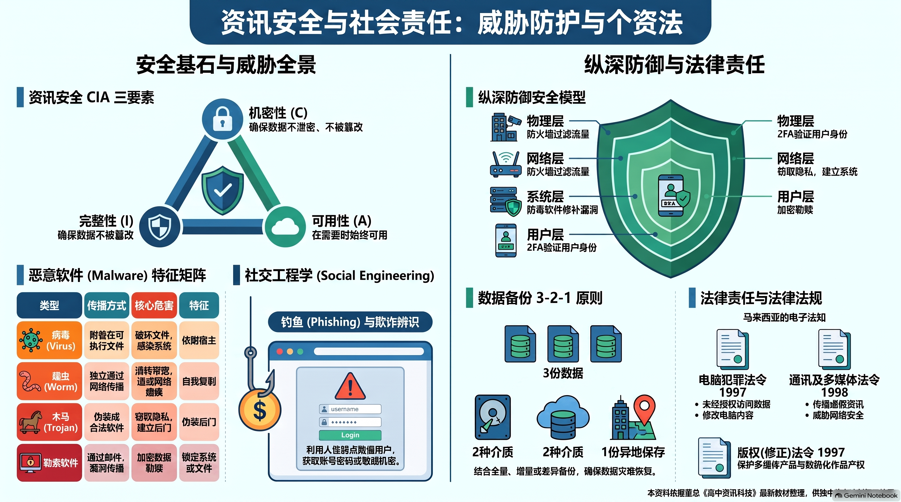
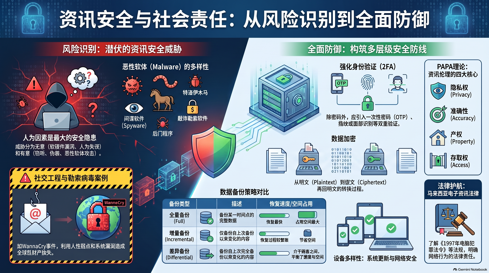

🎯 一、 单元教学与复习目标导航
1.1 课程标准核心素养
依据董教总华文独中工委会统一课程委员会《资讯科技课程标准》，本章作为全书的压轴收官章节，旨在引导学生筑牢数字安全底线，升华成为知法、守法、懂防护的高素质数字公民：
- 信息安全基石与企业防范体系：深刻理解 CIA 三要素（机密性、完整性、可用性），掌握现代企业构建信息安全防御的五大核心举措；
- 系统漏洞洞察与个人资产防护：掌握获取软硬件漏洞资讯的四大途径，熟练运用个人密码、双重验证（2FA）、电子钱包安全管控与公共电脑使用法则；
- 恶意软体机理与危机处置：以历史著名的 WannaCry 勒索软件为例，剖析其蠕虫漏洞传播机理，掌握“定期离线备份、绝不妥协支付赎金”的科学应对原则；
- 资讯伦理素养与网络暴力干预：精准辨析资讯伦理（道德准则）与资讯素养（管理技能）的差异，理解知识产权保障机制，精通应对网络霸凌与公共伪热点钓鱼的标准处置四步法。
1.2 师生教学达成清单 (Checklist)
📖 二、 课本官方中英对照核心术语速查表
（严格依据董总《高中资讯科技第 1 册：中英名词对照表》收录归纳）：
| 中文术语 | 英文术语 | 课本核心概念阐释 |
|---|---|---|
| 资讯安全 | Information Security | 保护资讯及资讯系统免受未经授权的存取、使用、泄露、破坏、修改或销毁的实践。 |
| 恶意软体 / 恶意程序 | Malicious Software, Malware | 旨在破坏电脑、服务器、客户端或计算机网络的任何恶性软件（含病毒、蠕虫、特洛伊木马）。 |
| 勒索软体 | Ransomware | 通过强力加密用户关键文件锁定访问权限，并敲诈勒索加密货币作为解密条件的恶意程序。 |
| 电脑病毒 | Computer Virus | 能够自我复制并潜伏依附在可执行文件上，破坏系统正常运行的计算机程序。 |
| 蠕虫 | Worm | 无需依附寄生文件即可独立运行，能够借助网络漏洞自主大量自我复制并泛滥蔓延的恶性程序。 |
| 特洛伊木马 | Trojan Horse | 伪装成合法、有益的实用工具诱骗用户下载安装，暗中窃取敏感隐私或开启系统后门的程序。 |
| 后门程式 | Backdoor | 绕过系统常规身份验证与安全控制机制，允许攻击者远程非法潜入系统的秘密通道。 |
| 双重验证 / 双因素认证 | Two-Factor Authentication (2FA) | 结合“你知道的”（密码）与“你拥有的”（手机短信/令牌），提供双重安全屏障的身份验证机制。 |
| 一次性密码 | One-time Password (OTP) | 仅能单次使用、在极短时效内有效的动态安全验证码。 |
| 网络钓鱼 | Phishing | 伪装成银行或官方可信机构，通过虚假网页、邮件诱骗受害者交出账号密码的社会工程学攻击。 |
| 社交工程 / 社会工程学 | Social Engineering | 利用人性的信任、贪婪、恐惧等心理弱点，诱导受害者泄露机密或做出危险安全操作的欺骗手法。 |
| 搭线窃听 / 嗅探 | Wiretapping / Sniffing | 在未获授权的情况下，截获、窃听或监听在物理线路或公共网络中明文传输的数据流。 |
| 资讯伦理 | Information Ethics | 人们在应用网络、多媒体和资讯系统时应当遵守的社会道德准则与行为规范。 |
| 资讯素养 | Information Literacy | 使用者有效确认、获取、评估与合法合规应用资讯的综合信息管理技能。 |
🛡️ 三、 6.1 资讯安全风险和防范 (Information Security Risks and Defense)
(1) 企业级资讯安全防御五大核心举措（课本核心问答题）

董总新课本与官方参考答案为现代企业信息安全建设制定了标准五维体系：
- 员工培训 (Staff Training)：定期对全体员工进行资讯安全意识和技能培训，提升资讯素养，强化对资讯伦理与操作风险的认知，构筑“人脑防火墙”；
- 遵守操作规范 (Compliance with Standard Procedures)：员工在日常业务中必须严格遵从企业制定的安全操作程序与权限规程，最大限度消弭人为失误给系统带来的安全威胁；
- 安全运作政策 (Secure Operational Policies)：企业管理层必须建立严谨、完备的安全管理制度（如最小权限原则、强密码定期更换规则），压缩系统漏洞与黑客入侵空间；
- 定期备份和还原 (Regular Backup & Recovery)：落实自动化、异地化数据备份机制，制定灾难应急恢复预案，确保在遭遇系统崩溃或黑客勒索时能够迅速还原重要数据；
- 专人侦测 (Professional Security Assessment)：聘请专业外部资讯安全顾问机构，定期对企业网络拓扑、服务器漏洞、员工行为与业务流程进行渗透测试与安全评估，防患于未然。
(2) 获取软硬件漏洞信息的四大渠道（课本重点问答题）

面对日新月异的技术漏洞，使用者应通过多维渠道保持敏锐感知：
- 关注官方最新公告：密切关注软硬件原厂（如 Microsoft, Apple, Google）发布的更新通告、补丁说明（Patch Notes）或安全警报；
- 参考其他用户社区反馈：浏览技术论坛、社交媒体专区或开发者社区，关注其他先行用户遇到的突发 Bug 与异常反馈；
- 依赖专业安全机构考证：查阅国家计算机网络应急技术处理协调中心、权威杀毒安全公司发布的专业漏洞安全评估报告；
- 自我日常观察与性能检测：在使用过程中，敏锐察觉电脑发热异常、网络流量激增、不明后台进程等异常征兆，运用基础知识自查。
(3) 个人数字金融与密码安全五大金律（学生生活防身必备）

- 拒绝个人信息弱密码：严禁使用出生日期、电话号码、纯姓名拼音作为密码，应采用包含大小写字母、数字与特殊字符的长复杂密码；
- 强制开启双重验证 (2FA)：即使密码被撞库窃取，攻击者没有用户手机上的动态短信或验证器 OTP 码依然无法登入；
- 设定电子钱包单日交易限额：对 Touch 'n Go eWallet, GrabPay 等移动支付设定合理的单笔与单日额度，阻断巨额盗刷；
- 谨慎绑定实体银行卡：非刚需尽量避免电子钱包长期绑定主银行账户或大额信用卡，降低连带金融穿透风险；
- 慎重扫描未知二维码：街头小广告、来历不明传单上的二维码极易植入恶意木马或跳转至仿冒钓鱼网站，切忌盲目扫码。
(4) 公共电脑设备与数据安全备份准则

- 公共电脑使用安全四规范（如网吧、机场打印店、图书馆电脑）：
- ① 必须使用浏览器的无痕式窗口（Incognito / Private Mode）；
- ② 离开前必须彻底清除浏览器历史记录、Cookie 与临时下载文件；
- ③ 严禁在公共电脑上进行任何网络银行登录、账号密码修改与网络支付操作；
- ④ 随时注意物理周围环境，防范他人身后窥探偷看密码（Shoulder Surfing）。
- 数据备份黄金准则：落实定期备份、多介质异构存储（移动硬盘 + 外部存储），并实施云端异地灾备。
⚖️ 四、 6.2 资讯社会责任 (Information Social Responsibility)
(1) 资讯伦理 (Ethics) vs 资讯素养 (Literacy) 的本质辨析（统考必考概念）

董总课本给出了权威定义与边界划分：
- 资讯伦理 (Information Ethics)：
- 定义：人们在应用网络和资讯系统时应当遵守的道德准则与行为规范。
- 核心指向：回答“什么该做，什么不该做”，关乎良知、守法、尊重他人隐私与知识产权。
- 资讯素养 (Information Literacy)：
- 定义：使用者高效管理与驾驭资讯的综合实践技能 (Skills)。
- 四大能力维度：
- 确认所需资讯的目标与范围；
- 获取多元资讯的能力（传统文献与网络资源）；
- 评估资讯真伪、时效性与权威度的能力；
- 应用资讯的能力（合规引用版权、融会贯通与创造性产出）。
(2) 知识产权 (Intellectual Property) 法律保障的深远意义

如果知识产权得不到有效法律保障，将对社会文明造成灾难性打击：
- 原创者合法权益受损：盗版与抄袭导致创作者无法收回研发成本与智力劳动报酬，生存艰难；
- 社会创作与创新活力衰退：当心血作品得不到保护与尊重，将极大挫伤创作者的创作热情，导致新学术思想、新文化作品与新技术产出锐减，最终抑制整个国家与社会的文化繁荣与科技进步。
(3) 经典恶意软件深度剖析：WannaCry 勒索病毒事件复盘（课本高频案例）

- 病毒属性与传播机制：属于典型的勒索软体 (Ransomware)，融合了蠕虫 (Worm) 的主动网络自传播特性；利用了 Windows 系统（如 Windows XP, Server 2003）底层 SMB 漏洞入侵，迅速加密电脑所有文件并同网传染。
- 勒索机制：袭击者通过暗网 Tor 匿名浏览器与受害者联系，强制要求受害者以比特币 (Bitcoin) 支付巨额赎金换取解密密钥。
- ⚠️ 防范铁律：坚决不鼓励受害者支付赎金！原因有二：
- 即使支付了赎金，犯罪分子也绝不保证会真的返还解密密钥；
- 支付赎金实质上是在资助网络犯罪，将极大助长此类勒索袭击的犯罪歪风！
(4) 应对网络霸凌 (Cyberbullying) 的标准处置程序与冷暴力反思

- 不回应：不参与网络对骂与唇枪舌战，切断施暴者的心理快感；
- 截取证据：完整截屏保存聊天记录、恶意评论、对方账号信息与时间戳；
- 向师长求助：及时向父母、班主任或学校辅导老师坦诚倾诉，寻求心理支援与干预；
- 报警备案：当涉及人身安全恐吓或严重名誉侵害时，果断报警依法追究。
⚠️ 旁观者的冷暴力警示：许多旁观者因害怕引火烧身而保持沉默，这种沉默实质上是对施暴者的纵容，是一种极其残忍的冷暴力；它会给受害者造成沉重的二度心理创伤，并导致校园与网络戾气恶性循环。
(5) 公共 Wi-Fi 钓鱼陷阱深度解析：中间人攻击防范

黑客常在公共场所架设同名的仿冒钓鱼热点（Evil Twin），诱使顾客连接并借助中间人监听窃取明文账户密码。防范三对策：① 向店家核准真实 SSID；② 优先使用个人蜂窝移动数据；③ 严禁在公共开放 Wi-Fi 下进行金融登录与转账支付。
🗺️ 五、 配套全景考点图谱与思维导图
基于 NotebookLM 与董总官方大纲精炼的资讯安全与社会责任全景图谱，点击图片可全屏高清放大：

📌 第 6 章 资讯安全与社会责任复习笔记 · 点击放大

📌 资讯安全与法律责任全景指南 · 点击放大

📌 资讯安全与社会责任核心思维导图 · 点击放大
⚡ 六、 师生考前 3 分钟极速速记卡
安全三要素CIA 三要素：机密性 (Confidentiality) · 完整性 (Integrity) · 可用性 (Availability)
企业五护栏员工培训 (筑牢人脑防火墙) · 遵守规范 · 运作政策 · 定期备份还原 · 专人侦测
个人五金律复杂长密码 · 双重验证 (2FA/OTP) · 钱包限额 · 慎绑银行卡 · 拒扫未知二维码
公共机四戒无痕式浏览 · 彻底清缓存 · 严禁登录网银与支付 · 严防身后偷窥
素养 vs 伦理资讯伦理 (道德准则：回答“该不该做”) vs 资讯素养 (管理技能：确认/获取/评估/应用)
WannaCry 铁律蠕虫式传播锁文件勒索比特币；应对：打补丁 + 离线备份 + 坚决不付赎金！
反霸凌四步法不回应 (切断快感) → 截屏留证 → 向师长求助 → 报警备案 (拒绝旁观冷暴力)
📝 七、 互动题库与全景智能评测系统
卷A基础 · 卷B进阶 · 模拟卷
严格对接董教总《资讯科技》第6章课程标准与 2026/2027 统考新规范，收录 80 道全真单项选择题（每 10 题一组分页自测，即判即析并展示教师核心考点）以及 15 道情境综合作答题（包含独立小问卡片与评分量规）。
3
套完整自测试卷
80
道全真单选题（即判即析）
15
道情境作答题（配量规）
10题/组
科学分页自测控制